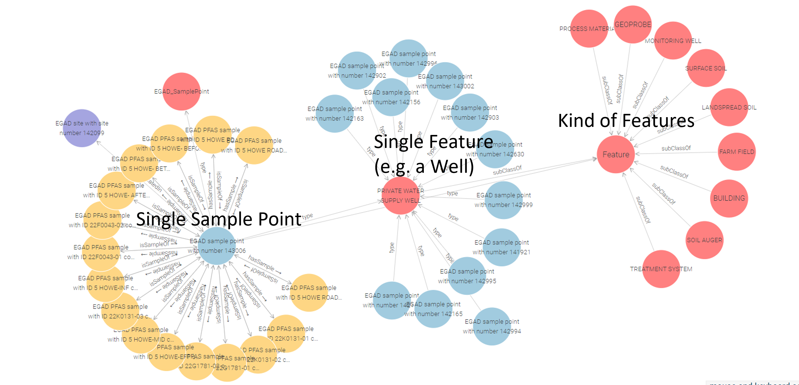

About Knowledge Graphs
Knowledge graphs represent information as connected entities and relationships, making it possible to integrate and query data across different sources and domains. In SAWGraph, this approach supports connections among PFAS observations, facilities and industries, hydrology, spatial information, agriculture, and chemical information.
What Is a Knowledge Graph?
A knowledge graph organizes information around entities, such as samples, facilities, waterbodies, wells, chemicals, and geographic regions, and the relationships among them. These relationships make connections within and across datasets explicit and machine-readable.
Rather than requiring all information to come from a single database, knowledge graphs can bring together data from multiple sources while retaining information about what the data represent and where they came from. They can also be extended as new datasets, concepts, and relationships are added.
In SAWGraph, interconnected knowledge graphs allow users to investigate relationships that cross traditional dataset boundaries, such as whether a PFAS observation is near a facility, within an administrative region, or connected to other locations through surface-water or groundwater systems.

Knowledge Graphs in SAWGraph
SAWGraph uses a modular network of interconnected knowledge graph components rather than a single graph. This structure supports reuse and modular development while allowing information from different domains to be queried and analyzed together.
Further Reading on Geospatial Knowledge Graphs
The following publications describe other geospatial knowledge graphs developed with contributions from members of the SAWGraph team:
- Hahmann, T., & Kedrowski, D. K. (2024). An ontology and geospatial knowledge graph for reasoning about cascading failures . 16th International Conference on Spatial Information Theory (COSIT 2024), Leibniz International Proceedings in Informatics (LIPIcs), 315, 21:1–21:9. DOI: 10.4230/LIPIcs.COSIT.2024.21 .
- Janowicz, K., et al. (2022). Know, Know Where, KnowWhereGraph: A densely connected, cross-domain knowledge graph and geo-enrichment service stack for applications in environmental intelligence . AI Magazine, 43(1), 30–39. DOI: 10.1002/aaai.12043 .